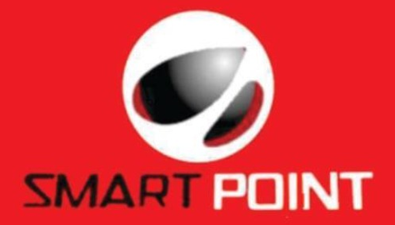
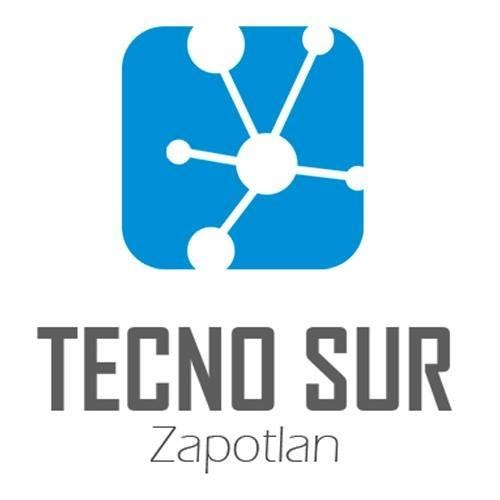

TECNO SUR Zapotlán
SMART POINT es un negocio de Ciudad Guzmán Jalisco, dedicada a reparación de circuitos electrónicos, desde computadoras de escritorio hasta smartwatches, para ofrecer el mejor de los servicios en cada oportunidad que se nos presenta, estamos en busca de ti, próximo egresado de ingeniería en electrónica.
Microsoft.
Microsoft Corporation es una compañía tecnológica multinacional con sede en Redmond, Washington, Estados Unidos. Microsoft es el acrónimo de microcomputer y software. Desarrolla, manufactura, licencia y provee soporte de software para computadores personales, servidores, dispositivos electrónicos y servicios
More

TECNO SUR Zapotlán es una empresa dedicada a las telecomunicaciones, instalación de cámaras de vigilancia y administración de seguridad doméstica, siempre con el compromiso de brindar el mejor de los servicios. Por tal motivo estamos en busca de talento, ingenieros próximos a egresar de ingeniería en sistemas, telemática, electrónica o carreras a fin.
More